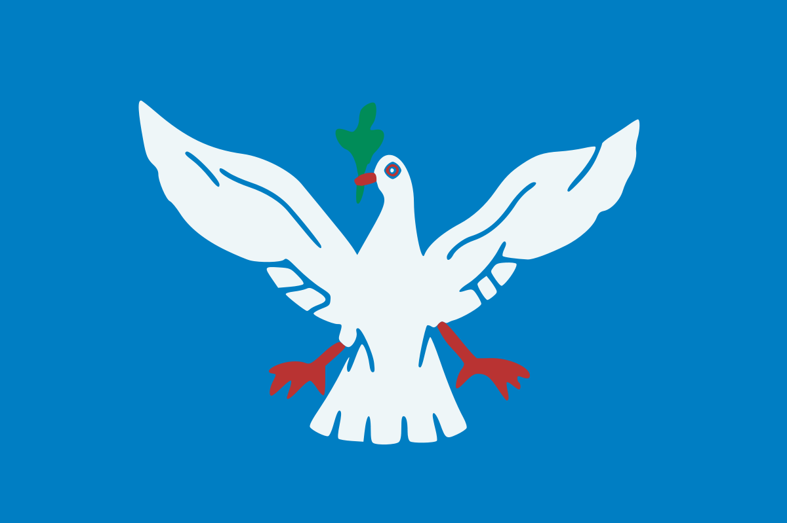
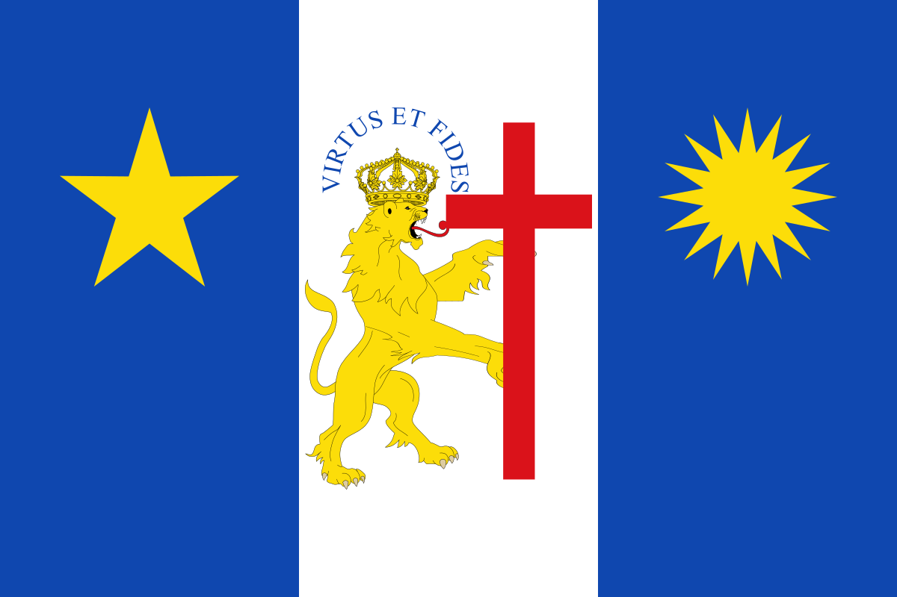
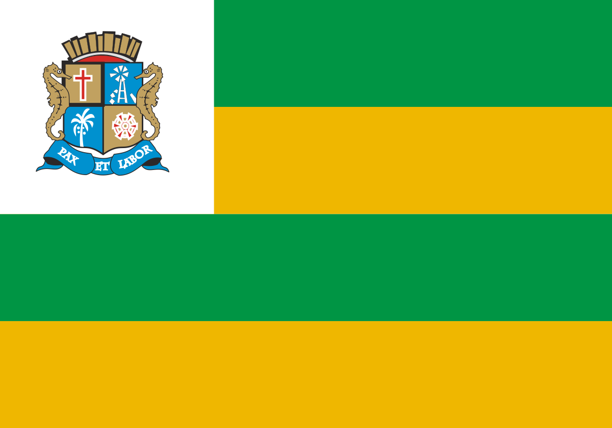

Maceió (AL)
Maceió é um município brasileiro, capital do estado de Alagoas, na Região Nordeste do país. Ocupa uma área de 509,5 km², É o município mais populoso de Alagoas, e sua população em 2020, é de 1 025 360 habitantes.

Rio Branco é um município brasileiro, capital do estado do Acre, na Região Norte do país e principal centro financeiro, corporativo, político e cultural do estado. 413.418 (2020) Rio Branco possui um clima quente e chuvoso.
Maceió é um município brasileiro, capital do estado de Alagoas, na Região Nordeste do país. Ocupa uma área de 509,5 km², É o município mais populoso de Alagoas, e sua população em 2020, é de 1 025 360 habitantes.
Macapá é um município brasileiro, capital do estado do Amapá, Região Norte do país. Sua população estimada em 2021 é de 522 357 habitantes, sendo o 51° município mais populoso do Brasil e o quinto mais populoso da Região Norte.
Manaus é um município brasileiro, capital do estado do Amazonas e principal centro financeiro, corporativo e mercantil da Região Norte do Brasil. com uma população estimada em 2 255 903 habitantes em 2021.
Salvador é um município brasileiro e capital do estado da Bahia. Situada na Zona da Mata da Região Nordeste do Brasil, Salvador é notável em todo o país pela sua gastronomia, música e arquitetura, com uma população de 2.675.656 pessoas.
Está localizada no litoral Atlântico, a uma altitude média de dezesseis metros, com 34 km de praias. Fortaleza possui 313,140 km² de área e 2 643 247 habitantes estimados em 2018, além da maior densidade demográfica entre as capitais do país.

Brasília é a capital federal do Brasil e a sede de governo do Distrito Federal. A sua região geográfica é conhecida como Planalto Central. sua população era de 3.094.325 habitantes (4.284.676 em sua área metropolitana).

Vitória é um município brasileiro, capital do estado do Espírito Santo, na Região Sudeste do país. É uma das três capitais do país cujo centro administrativo e a maior parte do município estão localizados em uma ilha e a população é de 365.855 (2020).

Goiânia é um município brasileiro, capital do estado de Goiás. Com uma área de aproximadamente 728,84 km²,[4] possui uma geografia contínua, com poucos morros e baixadas, caracterizada por ser uma região do Planalto Central do Brasil. com uma população de 1.555.626 pessoas em 2021.
Com uma população estimada em 1 108 975 habitantes, São Luís é o município mais populoso do Maranhão e o quarto da Região Nordeste. O clima do Maranhão se caracteriza por duas estações distintas: Estação chuvosa: janeiro a junho. Estação seca:: julho a dezembro.

Cuiabá é um município brasileiro, capital do estado de Mato Grosso, Região Centro-Oeste do país. Fundado em 1719 por Pascoal Moreira Cabral e descoberto por Miguel Sutil, Cuiabá possui clima tropical úmido, com uma população de 618.124 (2020).

Campo Grande é um município brasileiro da região Centro-Oeste, Reduto histórico de divisionistas entre o sul e o norte, Campo Grande foi fundada por mineiros com uma população de mais de 840 mil habitantes, O clima campo-grandense é caracterizado como tropical com estação seca.
Belo Horizonte é um município brasileiro e a capital do estado de Minas Gerais. Sua população em 2021 era de 2 530 701 habitantes, possui uma geografia diversificada, com morros e baixadas é a segunda capital de estado mais próxima da capital federal, depois de Goiânia.
frequentemente chamado de Belém do Pará com uma população de 1 506 420 habitantes. Belém apresenta um solo com uma textura média e indiscriminada, cercada por terrenos alagadiços e igarapés.
João Pessoa é um município brasileiro, capital do estado da Paraíba. Com população de 825.796 habitantes o município mais populoso do seu estado Pertence à Região Geográfica Imediata de João Pessoa e à Região Geográfica Intermediária de João Pessoa.
Curitiba é um município brasileiro, capital do estado do Paraná, localizado a 934 metros de altitude no Primeiro Planalto Paranaense, a mais de 110 quilômetros do Oceano Atlântico, distante 1 386 km a sul de Brasília, capital federal. Com 1.963.726 habitantes

Com área territorial de aproximadamente 218 km², é formado por uma planície aluvial, tendo as ilhas, penínsulas e manguezais como suas principais características geográficas O Recife tem um clima tropical úmido, típico do litoral leste nordestino. com uma população de 1.661.017 pessoas (2021).
Teresina é um município brasileiro, capital do estado do Piauí e a única capital da Região Nordeste que não se localiza no litoral, com uma população estimada em 868 075 habitantes em 2020, é a cidade mais populosa do Piauí. que aglomera cerca de 1.194.911 habitantes

Rio de Janeiro tendo um dos maiores destinos turísticos internacional no Brasil, da América Latina e de todo o Hemisfério Sul (em 2008), É a segunda maior metrópole do Brasil (depois de São Paulo), Sua população estimada pelo IBGE para 1.º de julho de 2021 era de 6.775.561 habitantes.

Natal é a segunda capital brasileira com a menor área territorial e a sexta maior capital do país em densidade populacional, com uma população de 890.480 (2020) Natal possui clima tropical chuvoso com verão seco,

Porto Alegre é um município brasileiro e a capital do estado mais meridional do Brasil, o Rio Grande do Sul. Com uma área de quase 500 km² e uma população de 1.492.530 habitantes, possui uma geografia diversificada, com morros, baixadas e um grande lago: o Guaíba.

Porto Velho é um município brasileiro e a capital do estado de Rondônia. Com uma população de 548.952 habitantes, conforme estimativas do Instituto Brasileiro de Geografia e Estatística (IBGE/2020), figurando no mesmo ano como a 21ª capital estadual do país com mais habitantes.

Boa Vista concentra cerca de dois terços dos habitantes do estado, sua população era de 436.591 habitantes em 2021. Além de ser a capital estadual mais setentrional do Brasil e a única localizada totalmente ao norte da linha do Equador e tem um clima tropical.

O município é composto pela ilha principal, a ilha de Santa Catarina, a parte continental e algumas pequenas ilhas circundantes. A cidade tem uma população de 516.524 habitantes, O clima em Florianópolis é subtropical, classificado como mesotérmico úmido.
Desempenha um importante papel na economia nacional. São Paulo é um município brasileiro e capital do estado de mesmo nome, localizado na Região Sudeste do país com uma população de 12,33 milhões (2020), o estado de São Paulo comporta os climas A - tropical e C - temperado úmido.
Aracaju localiza-se no leste do estado, sendo cortada por rios como o Sergipe e o Poxim. De acordo com a estimativa de 2021, sua população é de 672.614 habitantes. sua localização perfaz como importante ponto estratégico enquanto centro urbano, econômico, cultural e político para o país.
Palmas é a capital do estado do Tocantins, estado da Região Norte. É a mais jovem dentre as capitais brasileiras, tendo sido fundada em 1989. A cidade é banhada pelo Rio Tocantins, um dos mais importantes do estado. Com 306.296 habitantes, é o município mais populoso do Tocantins.